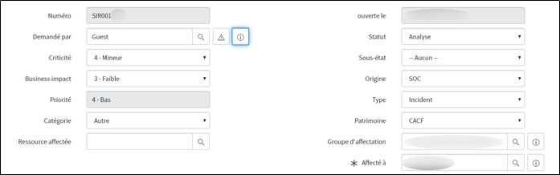
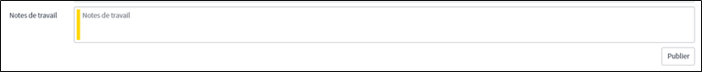

4.1. Cycle de vie d'un incident
Pour le cycle de vie d'un incident, nous allons vous montrer l'interface dans SECOPS et comment le piloter de la réception jusqu'à sa fermeture.

4.1.1. Les statuts
Plusieurs statuts existent sur SECOPS. Nous pouvons retrouver :
Brouillon : L'incident qui n'a pas encore été assigné à une personne pour résolution.
Analyse : L'incident est en cours d'investigation.
Contenir : L'incident est presque résolu mais il manque une dernière confirmation ou information.
Eradiquer : Une résolution a été mise en place.
Récupérer :
Fermé : La résolution a été confirmée, l'incident est donc résolu.
4.1.2. La criticité
Pour chaque incident un niveau de criticité est donné plus il est élevé, plus la vulnérabilité doit être traitée rapidement.
Risque CRITIQUE : la vulnérabilité doit être traitée dans les plus brefs délais et au maximum dans les deux semaines tout en prenant les mesures conservatoires nécessaires.
Risque MAJEUR : la vulnérabilité doit être traitée dans le mois.
Risque MOYEN : la vulnérabilité doit être traitée dans les 3 mois.
Risque FAIBLE : la vulnérabilité doit être traitée dans les 6 mois.
4.1.3. Autres
Nous devons indiquer le patrimoine pour chaque incident. Le patrimoine n'est jamais renseigné, il faut donc mettre CACF.
Il faut également vérifier l'origine de l'incident.
S'il est renseigné SOC alors l'incident a été declenché par le SOC. S'il est renseigné CERT alors l'incident a été declenché par le CERT. Pour finir si l'origine renseignée est interne c'est un incident créé par l'équipe.La dernière chose à faire est de renseigner la personne affectée à l'incident.
4.2. Suivi d'un incident
Dans chaque incident un emplacement appelé Notes de travail est reservé pour assurer un suivi de l'incident et pour permettre aux personnes d'écrire les actions qui ont été réalisées.

 RECHERCHER
RECHERCHER